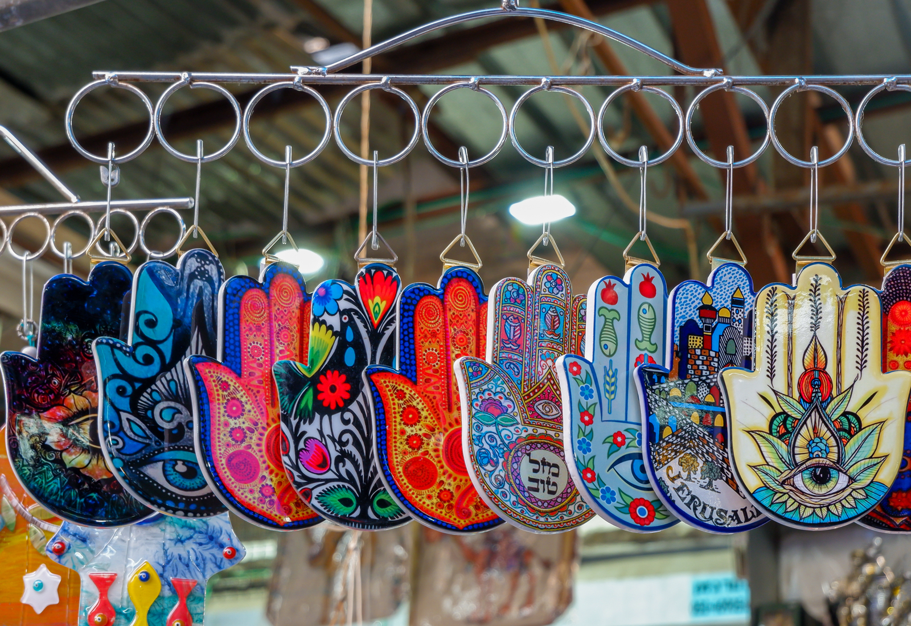

Personal Recommendation
If you have a loved one to whom you want to give something uniquely specific to a country you have visited or are thinking of visiting, we can help you find the most original souvenirs for that person. Here we have a division of souvenirs into several categories and a search bar to ease your experience in finding the right gift.
General Recommendation
If you want to learn more about a country, the souvenirs it has can be a good start learning more about its past and its traditions. This page contains a multitude of souvenirs specific to each country from which you can choose both for yourself and for your close ones.